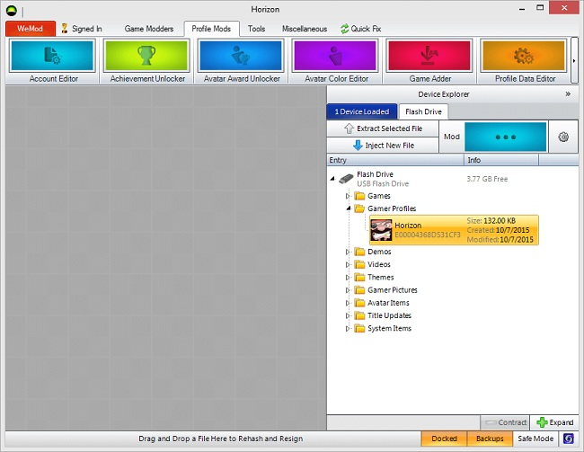
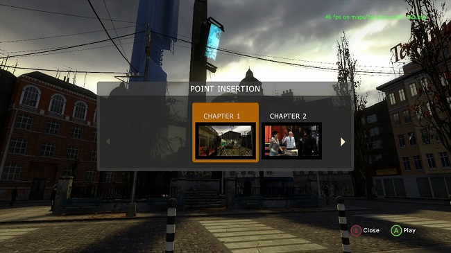

run The Orange Box @ 60FPS with a Vanilla Xbox 360
ReveriePass made and shared a discovery last year to get The Orange Box running at 60fps on Xbox 360, One & Series consoles, through modifying the 'User Settings' file.
i love Half-Life 2, so i was ecstatic when i saw Digital Foundry publish a video about Half-Life 2 running at 60 frames per second on unmodded Xbox consoles thanks to a tip they were given by a Patreon supporter of theirs by the name of SJ33, which linked to a tweet from @f4micom, which itself linked to a year-old YouTube video from ReveriePass, whose knowledge i am now passing on to you guys. isn't the web wonderful?
ReveriePass discovered a method to modify the config file to uncap the framerate without the need to have a hardware-modded Xbox 360. this is pretty wild stuff to see on such a locked-down platform as a seventh generation home console!
this mod is obviously more beneficial to users of Xbox One and Series consoles, but i just sold my Xbox Series S, so i stuck with my Xbox 360 S.
how to do it
you'll need:
- an Xbox 360
- a PC or VM running Windows
- a USB flash drive
- a copy of The Orange Box
- the Horizon app
The Orange Box has now been completely delisted and is unavailable for purchase, even from the Xbox Marketplace site, so if you don't already have it, your only option is a physical copy.
it's criminal that such important games aren't easily accessible on all modern platforms!
first, boot up The Orange Box on your Xbox 360 with your flash drive inserted. load up Half-Life 2, and enter the Settings menu. it will ask you to select a storage device, so go ahead and select the hard drive. when the Settings menu opens, make sure to dial things in now, because any future attempts to enter this menu could cause the mod to get wiped!
once you've finished, close the Settings menu and quit the game, repeating this process for any of the games you'd like to perform this hack to, bearing in mind it doesn't seem to want to work with Team Fortress 2 sadly.
after that, return to your Xbox Dashboard and navigate to System Settings. select your hard drive, "Games & Apps", "The Orange Box", then copy "User Settings" to your flash drive.
take your flash drive to your Windows machine and open up Horizon.
 wow, this program hasn't visually changed one bit since i last used it 10 years ago!
enter the Device Explorer on the right side and navigate into the Games folder on your flash drive, followed by The Orange Box, then User Settings. click the little cog icon on the upper-right-hand corner, which should open a little pop-up in the blank space. click the Contents tab, right-click hl2_config.cfg and extract it to anywhere on your computer, like the Desktop.
opening up the freshly-extracted config file with Notepad, it will be a very familiar sight to anyone who's toyed around with the Source Engine before. ReveriePass' video leaves some commands in their description to disable the framerate limit & V-Sync, along with a couple other enhancements that can be afforded by the extra processing grunt from the higher-end consoles (so i'll omit these)
mat_motion_blur_enabled 0
mat_vsync 1
mat_picmip -1
mat_hdr_level 2
mat_specular 1
r_shadowrendertotexture 1
r_flashlightdepthtexture 1
r_lod 0
snd_mixahead 0.05
you can add any command you'd like here (even sv_cheats 1!) but for now i'll just add cl_showfps 1 so i can get a readout of my framerate on screen.
once you've made all your changes, save the file and quit Notepad.
back in Horizon, right-click hl2_config again, this time choosing Replace... to replace the file with the modified version we've just made.
after that, all that's left to do on the PC is to click the red Save, Rehash and Resign button and eject your flash drive.
back on the Xbox, re-insert your flash drive and select it on the Storage screen that you should still be on. navigate once again to Games and Apps, The Orange Box, then User Settings. copy this file to your hard drive (or the cloud if you'd like to get that uncapped Source 1 goodness on the Xbox One or Series consoles!) select Yes if it warns you about replacing the file on your hard drive, and wait for the copy to complete.
the experience
loading up The Orange Box, then Half-Life 2, as soon as we start a New Game, i instantly saw the framerate counter i enabled!
 46 fps, nice!
et voilà, Half-Life 2 running at an uncapped framerate on an unmodified Xbox 360. it's beautiful.
some major caveats, though, bare mentioning:
- you can't enter the settings menu anymore without losing our customizations,
- loading an old save file loses the modified config too (new saves should work)
that's right, it's single session Half-Life 2 playthrough time!
or..you could take advantage of Xbox Series' quick resume feature, but come on, where's the fun in that?!
speaking of fun, since these are single player games, why not have some fun with them? sv_cheats 1; impulse 101 will give you the full set of Half-Life 2's weapons and ammo, even in Portal! you can execute multiple commands at once using a semicolon, and you can use this to bind extra commands to buttons like Select for example.
conclusion
this is really cool stuff to see personally. Half-Life 2 is my favourite video game period, and Source 1 is my bread and butter.
i always thought it was impressive that the Xbox 360 could run these games and have them look so good, but after a full playthrough with this mod, seeing it hit 60fps as often as it did is more impressive still!
this is my first time turning a video of mine into a blog post, and hopefully it was helpful to somebody out there. thanks for reading! :3